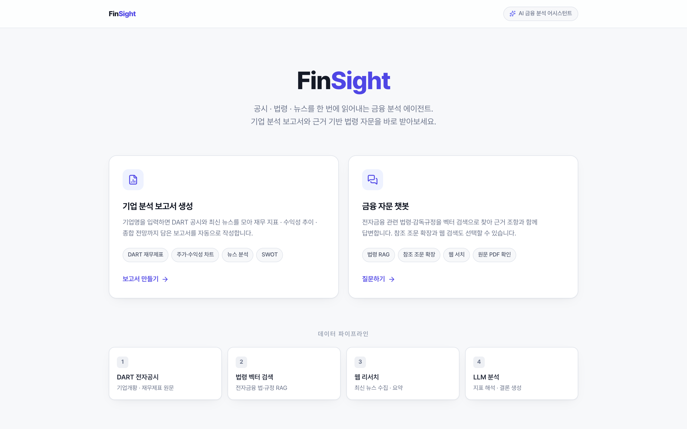

01KT K intelligence 해커톤 2025 - Track 1: AI Agent 개발
금융 분석 에이전트
Finsight
프로젝트 주제
금융권 애널리스트를 위한 기업 조사 및 금융 법령 검토 AI 에이전트
구현 내용
- 법령의 장, 절, 조 구조를 유지해 검색하고 근거 조항과 함께 답변
- DART 공시, 재무제표, 뉴스를 모아 기업 분석 보고서 작성
본인 기여
- Report Agent의 DART 공시와 재무제표 수집, 파싱
- LLM으로 기업별 뉴스 검색 질의를 만들고 분석에 필요한 기사 선별
- 재무정보와 뉴스를 결합한 보고서 작성 흐름 자동화
성과
우수상 (63팀 중 3위)

사용 기술